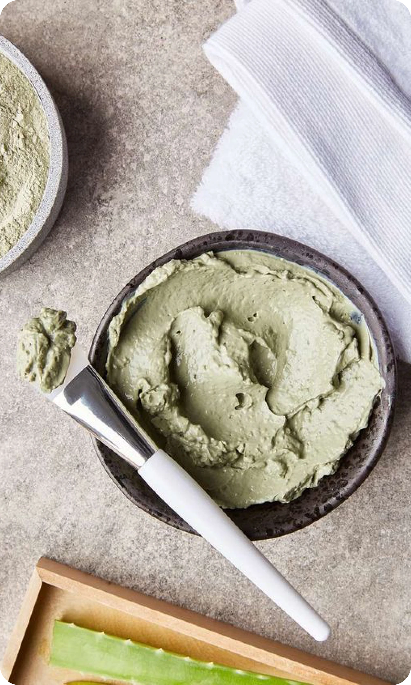
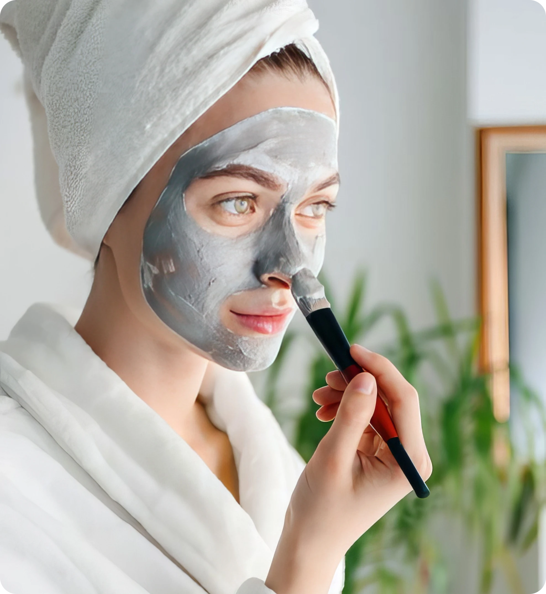

21 марта 2024
средства
Глиняные маски – это одни из самых популярных средств в уходовой косметике, которые помогают поддерживать здоровье и красоту кожи. Глина уже с давних времен использовалась для лечения и укрепления кожи благодаря своим уникальным свойствам. Рассмотрим, какой эффект они оказывают, и как подобрать подходящую.
Описание
Глина обладает абсорбирующими и очищающими свойствами. Она вытягивает из пор загрязнения и питает глубокие слои кожи полезными микроэлементами. Кроме того, она улучшает кровообращение, стимулирует обновление клеток, увлажняет и смягчает кожу. Поэтому глиняные маски могут быть эффективными средствами для борьбы с проблемами кожи, такими как угри, черные точки, жирность или сухость.
Виды глины
Зеленая глина
Зеленая глина обладает ярко выраженными антибактериальными свойствами. В ее состав входят такие полезные вещества, как серебро, кальций, магний, медь, фосфор и цинк, поэтому она хорошо снимает воспаления и сужает поры.
Голубая глина
Голубая глина особенно богата минеральными солями и полезными микроэлементами. В ее составе можно встретить оксид кремния, азот и фосфат. Она борется с ранками и воспалениями, а также улучшает цвет кожи.
Белая глина
Белая глина также является мощным антисептиком, поэтому подойдет людям с проблемной кожей. В ее составе содержатся цинк, магний и кремнезем.
Розовая или красная глина
Розовая глина улучшает кровообращение и борется с аллергическими реакциями. Кроме того, она разгладит мимические морщинки и даст заметный подтягивающий эффект, сделав кожу более эластичной и гладкой.
Желтая глина
В состав желтой глины входят железо и калий. Она прекрасно тонизирует и смягчает, а также способствует насыщению кожи кислородом.
Черная глина
Черная глина отлично очищает кожу, уменьшает воспаления и сужает поры. В ее состав входят стронций, кварц, кальций, железо и магний. Маска из черной глины помогает избавиться от жирного блеска и восстановить липидный баланс.
 
Применение
В природе существует семь видов глины, которые отличаются друг от друга по цвету и свойствам. Для достижения максимального эффекта следует придерживаться некоторых правил.
Наносите маску равномерно, избегая кожи вокруг глаз. Держите маску столько, сколько указано на упаковке — обычно это от 10 до 20 минут. Смойте маску теплой водой и обязательно нанесите увлажняющий крем после процедуры
Для сухой кожи рекомендуется использовать глиняные маски на основе белой, желтой или розовой глины, которые помогут увлажнить и смягчить кожу, не пересушивая ее.
Для жирной кожи подойдет маска на основе белой, зеленой или черной глины, которая поможет уменьшить жирность и сузит поры.
Для чувствительной кожи подойдет универсальная розовая глина, которая мягко тонизирует кожу и не пересушит ее слишком сильно.